Cordoba — April 1–6
Five nights during Semana Santa. Airbnb south bank near Puente de San Rafael. Mindaugas working remotely Apr 1–3, couple days Apr 4–6.
Sights & Culture
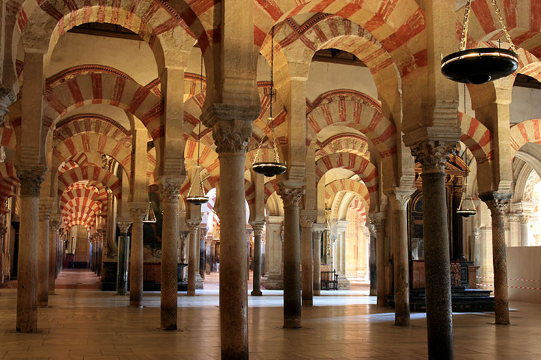
Mezquita-Catedral 📍
€13 · Book ahead at mezquitadecordoba.org
UNESCO World Heritage mosque-cathedral with 856 red-and-white horseshoe arches. Patio de los Naranjos (orange courtyard) is free. One of the most extraordinary buildings in Europe.

Roman Bridge 📍
Free · Open 24h
230m flat walk across the Guadalquivir with spectacular Mezquita views. Benches at both ends. Best at sunset when the stone glows golden. Pregnancy-perfect — completely flat.
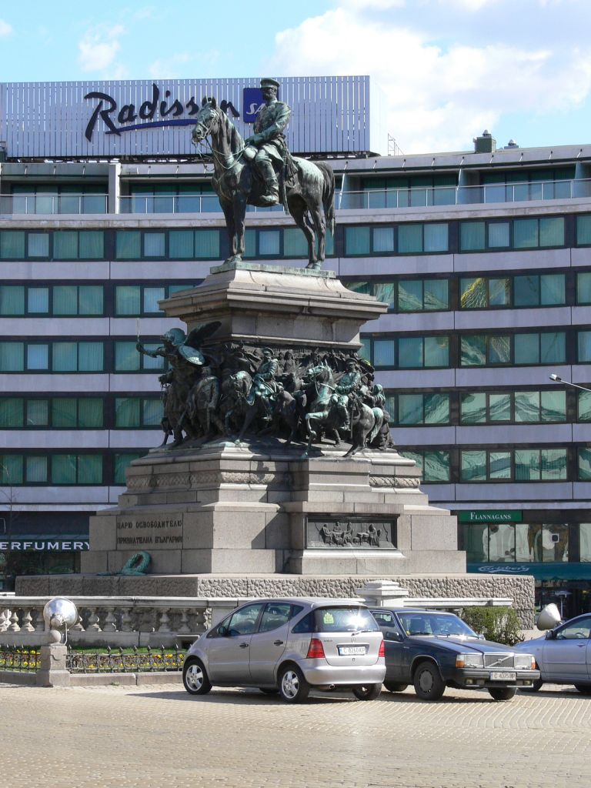
Jewish Quarter (Juderia) 📍
Free (Synagogue €0.30)
Whitewashed maze of narrow lanes with flower-draped balconies. Medieval Synagogue (one of only three surviving in Spain) and Casa de Sefarad museum (€4).

Calleja de las Flores 📍
Free · 2 min from Mezquita
Cordoba's most photographed alley — narrow lane bursting with flowerpots, framing the Mezquita tower. Quick visit but iconic.
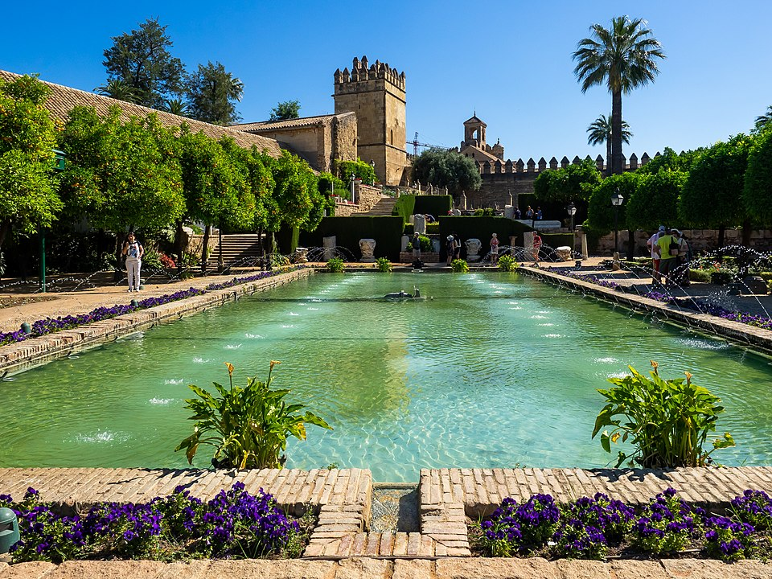
Alcazar de los Reyes Cristianos 📍
Free mornings · Gardens open until 14:45
Arabic-style gardens with tiered water features, hedged walkways, and citrus trees. Flat, shaded, pregnancy-friendly. Palace interior closed for renovation.
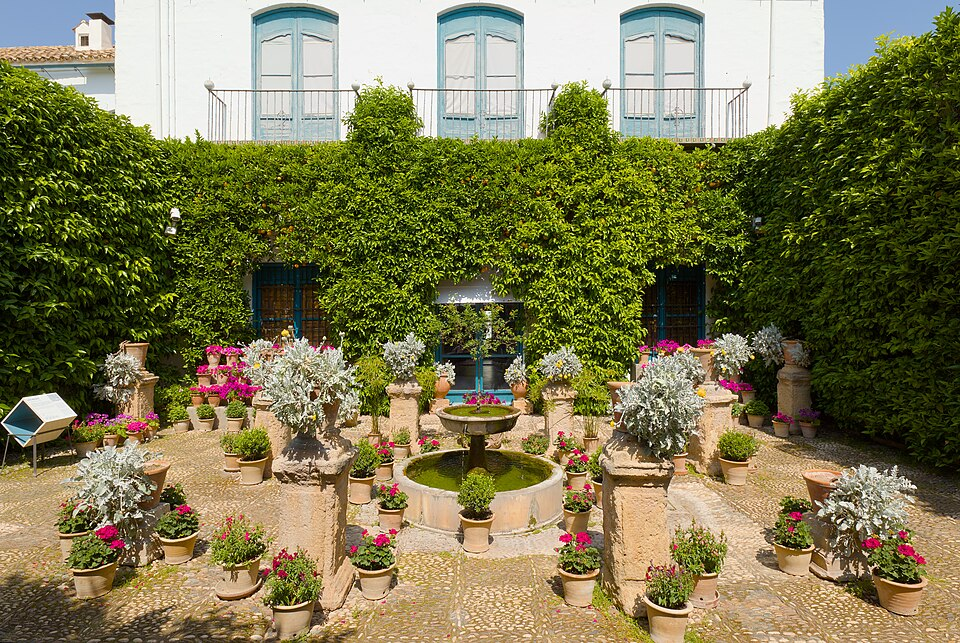
Palacio de Viana 📍
€6 patios-only · Plaza de Don Gome, 2
Twelve beautiful courtyards, each with a different character. €6 patios-only ticket recommended (no standing guided tour, pregnancy-friendly).
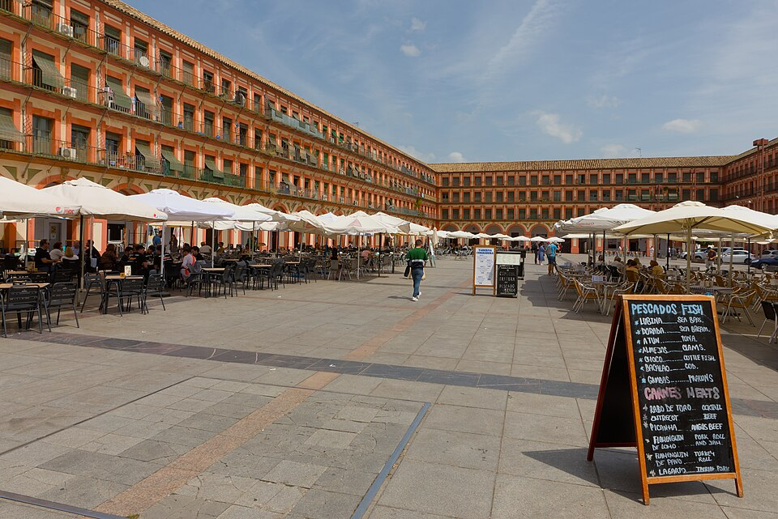
Plaza de la Corredera 📍
Free · Open square
Unique arcaded rectangular plaza — the only one of its kind in Andalusia. Great for morning cortado, people-watching, or evening strolls.
Shows & Activities
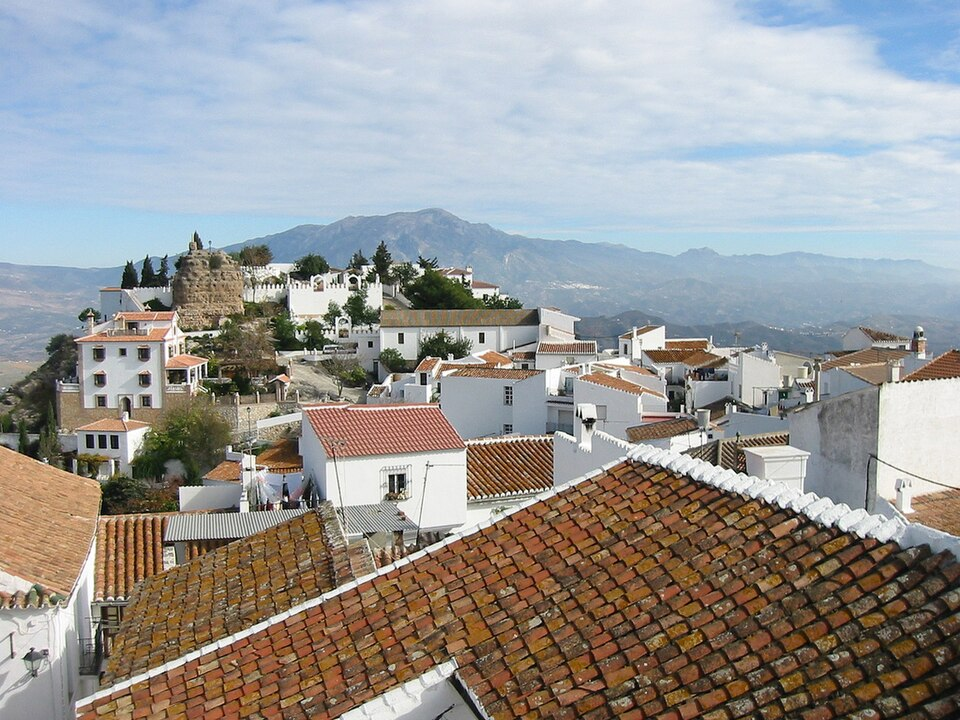
Caballerizas Reales 📍
€17 · CONFIRMED April 2, 20:00
Andalusian horses performing dressage to Spanish guitar and flamenco. Royal stables built 1570. 75 minutes. Arrive 19:40 for good seats.
Parks & Gardens
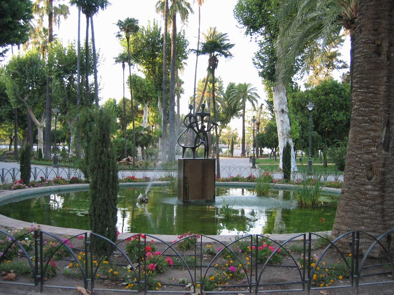
Jardines de la Agricultura 📍
Free · All day
Cordoba's largest central park with flat paths, duck pond, and rose gardens. Perfect pregnancy sanctuary for slow mornings.
Restaurants
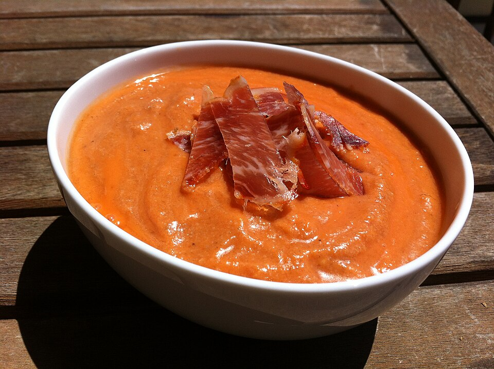
Bodegas Mezquita 📍
+34 957 49 00 04 · Calle Cespedes, 12
Next to the Mezquita. Try salmorejo, Mozarabic meatballs in almond-saffron sauce, oxtail croquettes. Continuous service from 12:30.
Casa Pepe de la Juderia 📍
+34 957 20 07 44 · Calle Romero, 1
Upscale but warm. Famous croquetas, fried eggplant with honey, lamb. Dinner from 19:30.
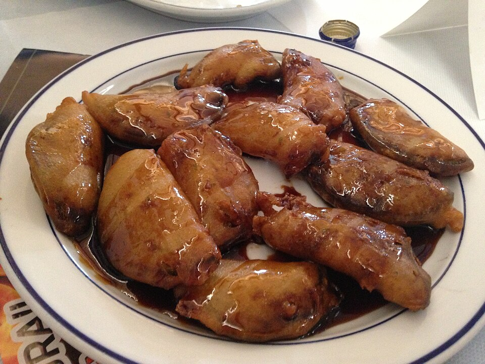
El Rincon de Carmen 📍
+34 957 29 10 55 · Calle Romero, 4
Cozy courtyard, family-run. Grilled meats, salads, local specialties. Dinner from 19:30.
Cafes & Breakfast
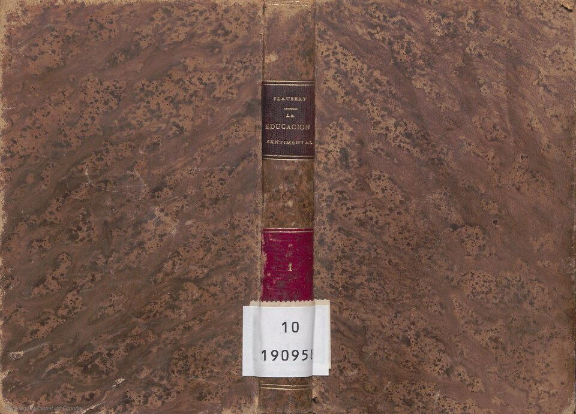
Singular 📍
Ronda de Isasa, 4 · +34 957 91 51 00
Riverside cafe with outdoor seating. Excellent coffee and brunch. Perfect morning start with Roman Bridge views.
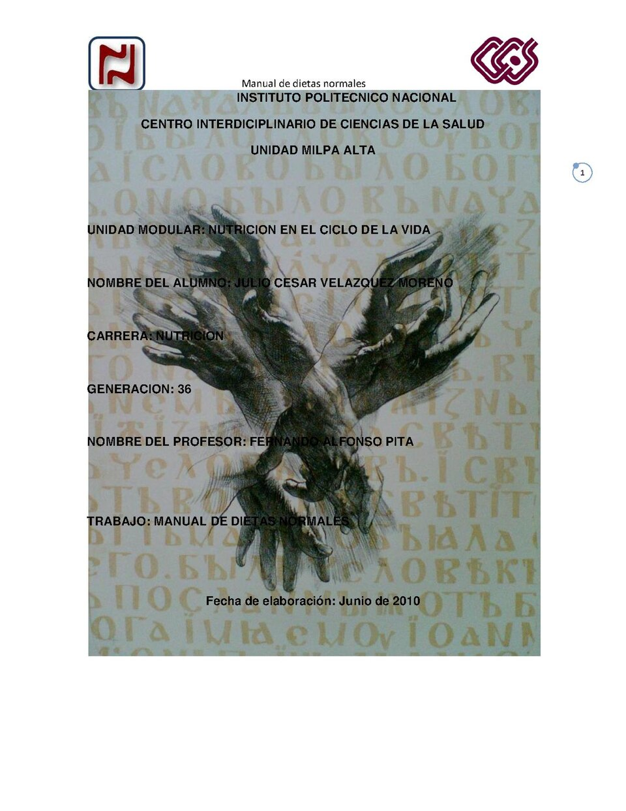
The Golden Stack 📍
Calle Fray Luis de Granada, 3
Best breakfast in Cordoba. Pancakes, waffles, excellent coffee. Arrive early to avoid the queue.
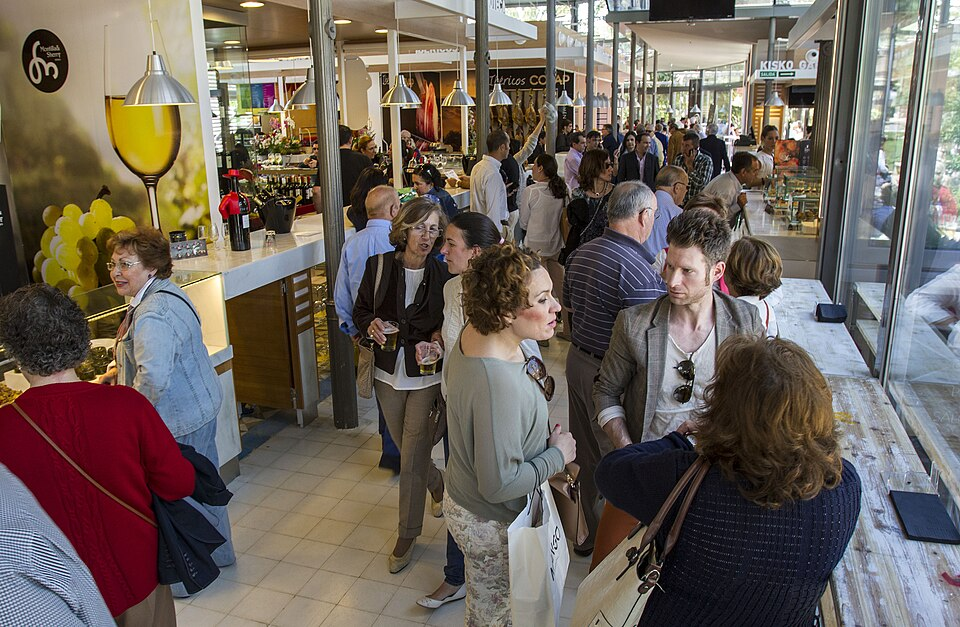
Mercado Victoria 📍
Near Jardines de la Agricultura
Modern food hall with 30+ stalls. Salmorejo, sushi, gourmet burgers. Indoor, air-conditioned. Good for indecisive days.